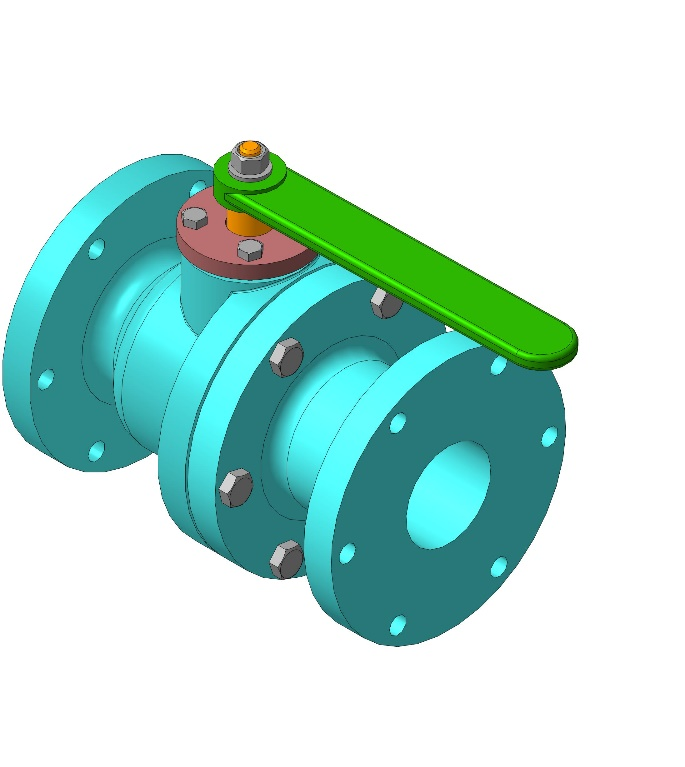
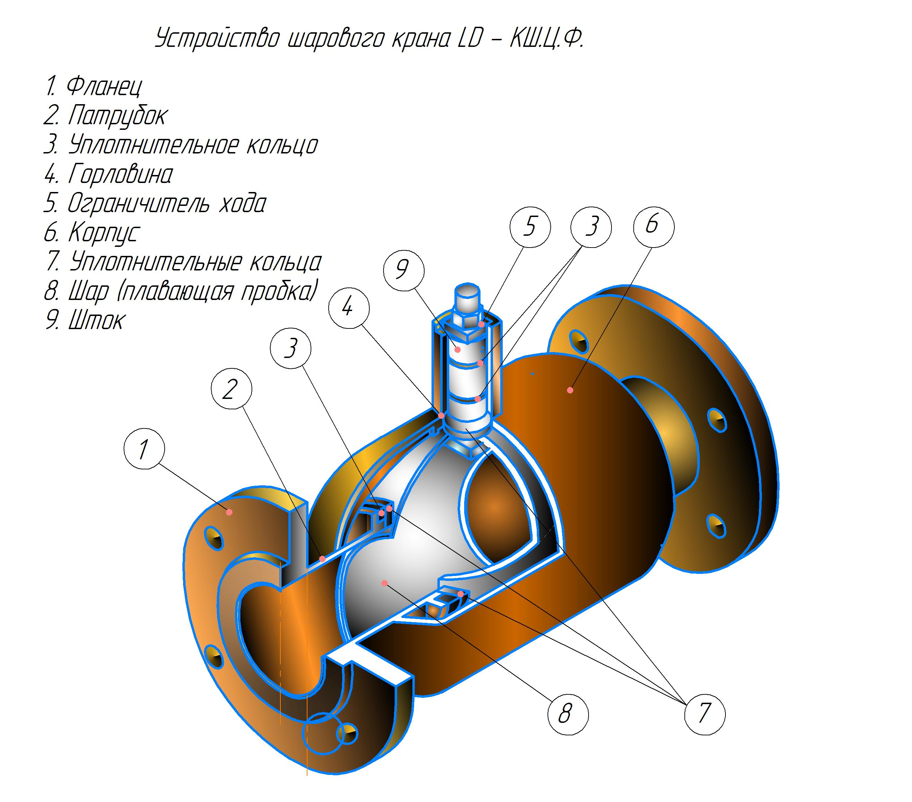

Одной из наиболее распространенной разновидностью трубопроводной арматуры является кран шаровой.
Шаровые краны используются в качестве запорной и регулирующей арматуры в газопроводах и для систем перекачки нефтепродуктов. Основное назначение: изменение расхода транспортируемой рабочей среды, а также полное отсечение ее подачи на определенном участке трубопровода.
Управление шаровыми кранами осуществляется с помощью рычага, редуктора или электропривода.

Рисунок 6 – Кран шаровой фланцевого присоединения
Преимущества шаровых кранов:
- удобная установка и эксплуатация;
- возможность быстрого перекрытия потока в трубопроводе;
- высокая надежность и герметичность;
- простота конструкции;
- малый износ конструкции;
- не большие габариты;
- возможность эксплуатации при высоком давлении и температуре.